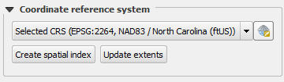

In the Layer Properties dialog, do:
-
Go to the General tab.
-
Under Coordinate reference system make sure that the Selected CRS is EPSG:23030, ED50 /UTM zone 30N

-
If it is not, select the correct CRS for your layer, either using the combobox or the Select CRS button to the right.
-
Click OK to apply the changes and close the dialog.
Once you are done, click Next step to continue the lesson.